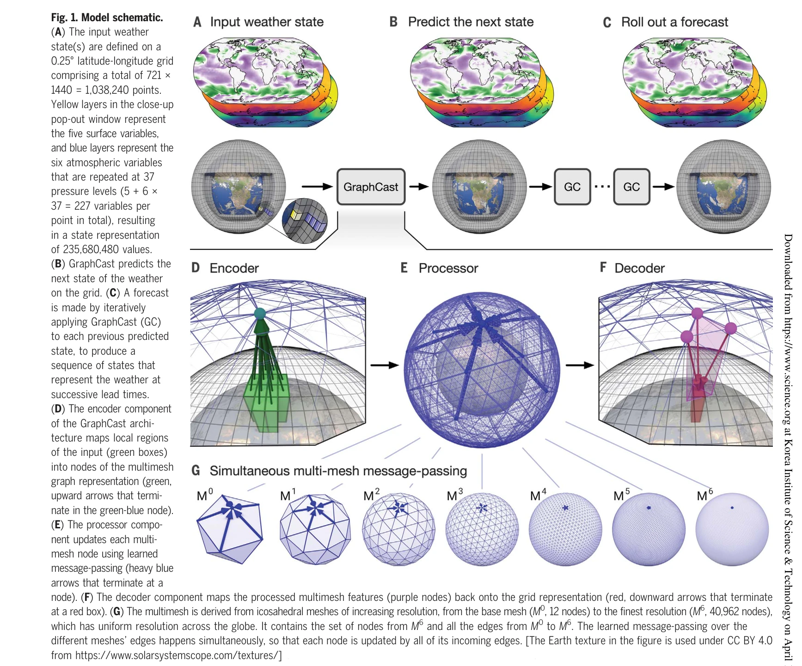
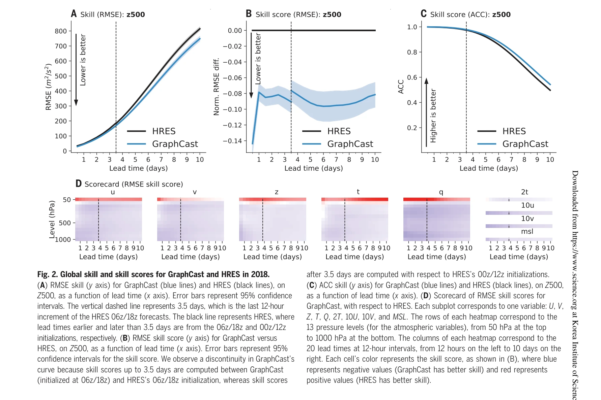

저자: Remi Lam, Alvaro Sanchez-Gonzalez, Matthew Willson, Peter Wirnsberger, Meire Fortunato, Ferran Alet, Suman Ravuri, Timo Ewalds, Zach Eaton-Rosen, Weihua Hu, Alexander Merose, Stephan Hoyer, George Holland, Oriol Vinyals, Jacklynn Stott, Alexander Pritzel, Shakir Mohamed, Peter Battaglia | 날짜: 2023-12-22 | DOI: 10.1126/science.adi2336

Fig. 1. Model schematic.
GraphCast는 Graph Neural Network 기반의 기계학습 모델로, 과거 재분석 데이터로부터 학습하여 10일 앞의 날씨를 0.25° 해상도로 1분 이내에 예측하며, 기존의 수치 기상 예보 시스템을 90% 이상의 검증 항목에서 능가한다.

Fig. 2. Global skill and skill scores for GraphCast and HRES in 2018.
Fig. 1. Model schematic.
총평: GraphCast는 Graph Neural Network의 효율성과 기계학습의 데이터 기반 학습 능력을 결합하여, 전통 수치 기상 예보를 능가하는 혁신적인 중기 예보 시스템을 제시한다. 고속·고정확·고해상도의 실용적 성능과 극한 기상 예측 응용 가능성으로 기계학습 기반 복잡 동역학계 모델링의 큰 진전을 나타낸다.